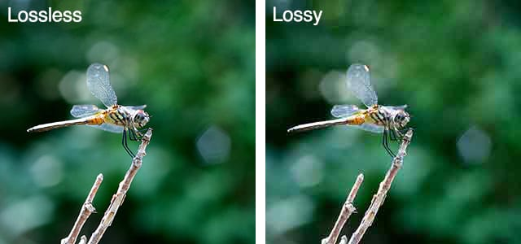
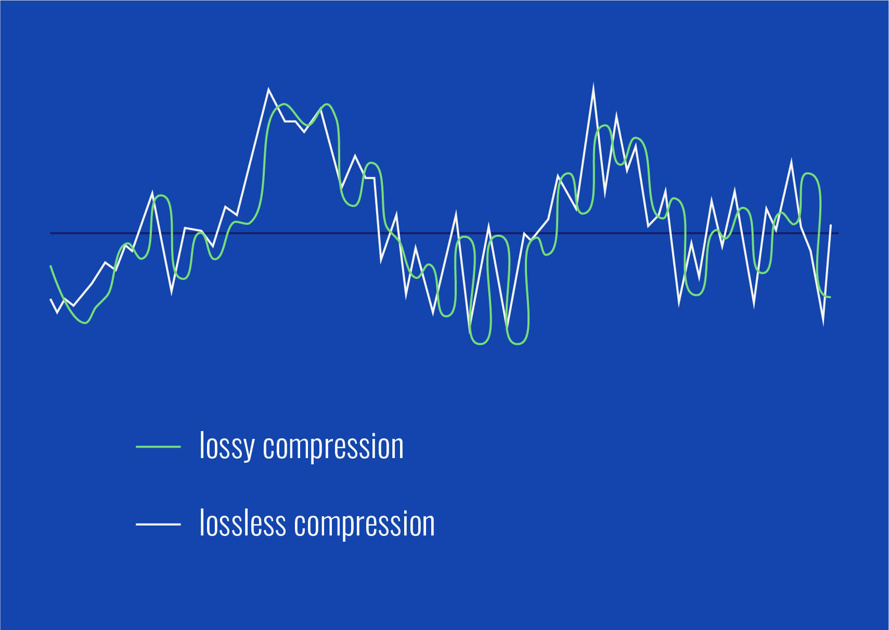

Compressie
Welkom op deze pagina met uitleg over de werking van compressie — erg belangrijk in de computerwereld!
Compressie bestaat omdat computers niet oneindig opslag hebben. Om zoveel mogelijk bestanden op je computer te kunnen zetten moet je ze op een slimme manier zo klein mogelijk maken. Je hebt 2 soorten compressie: lossless en lossy. Lossless maakt het bestand kleiner zonder gegevens te verliezen. Lossy compressie vermindert ook de kwaliteit van het bestand. Zoals je in de afbeelding hieronder kunt zien, zie je bij de lossy afbeelding wazige spikkeltjes terwijl de lossless versie de originele scherpte behoudt. Op Windows-computers wordt compressie vaak gedaan met .zip-bestanden.

Voorbeeld
Lossy compressie bij afbeeldingen zorgt ervoor dat kleine verschillen in kleur verdwijnen, waardoor bijvoorbeeld de tint blauw van het water hetzelfde wordt als de net iets lichtere tint blauw van de lucht. Daarnaast worden herhalende tekens verkort — als er in het bestand "aaababbb" staat zal hij dit verkorten naar "3aba3b".
Audio
Audio-compressie vermindert de bestandsgrootte van geluidsbestanden door overbodige of minder hoorbare gegevens te verwijderen.
Bij lossy compressie worden onhoorbare frequenties verwijderd om de bestandsgrootte erg te verkleinen. Bestanden zoals MP3 en AAC gebruiken deze soort compressie. De geluidskwaliteit wordt iets lager, maar het verschil is vaak moeilijk te merken.
Bij lossless compressie blijft alle audio-informatie behouden. Dit wordt gebruikt in formaten zoals FLAC en ALAC. Hoewel de bestandsgrootte kleiner wordt dan bij ongecomprimeerde audio, blijft de kwaliteit perfect behouden. Dit wordt vaak gebruikt in studio's waar muziek wordt gemaakt.
